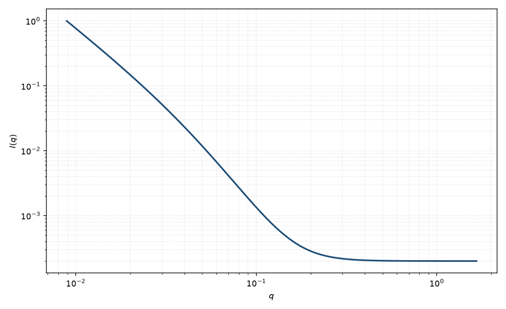

质量–表面分形
mass-surface fractal
适用场景
聚集体在中间 $q$ 按质量分形生长，高 $q$ 看见一次颗粒的粗糙或光滑表面时，把 $q^{-D_m}$ 接到 $q^{D_s-6}$。转折给出一次颗粒尺度。
只有一段斜率时不要用本模型。需要建造块振荡时回到完整分形页。
物理图像
两个标度区共用一个交叉 $q_c\sim 1/r_0$。低 $q$ 仍可由整体 $\xi$ 截断。这是双幂律在分形语言下的特款。
磁性若只存在于表面层，可能只看见表面段。
示意图

核心公式
出发点
聚集体在 $r_0\ll r\ll\xi$ 按质量分形 $g(r)\sim r^{D_m-3}$ 排列，一次颗粒表面在 $r\lesssim r_0$ 按表面分形 $r^{3-D_s}$ 粗糙。两个标度区的 Fourier 变换给出两段幂律，交叉 $q_c\sim 1/r_0$。
推导
质量段：$I\sim q^{-D_m}$。表面段：Bale–Schmidt $I\sim q^{D_s-6}$。用与双幂律相同的有理交叉，令 $m_1=D_m$、$m_2=6-D_s$：
$$I(q)=\frac{A}{q^{D_m}}\frac{1}{1+(q/q_c)^{6-D_s-D_m}}+B.$$$q\ll q_c$ 时分母 $\to 1$，指数 $D_m$。$q\gg q_c$ 时分母 $\sim(q/q_c)^{6-D_s-D_m}$，指数变成 $6-D_s$。光滑一次颗粒取 $D_s=2$，高 $q$ 即 Porod $q^{-4}$。
低 $q$ 与渐近
本交叉式在 $q\to 0$ 仍是 $q^{-D_m}$，没有整体 Guinier；更大尺度的 $\xi$ 截断需另加或回到 Teixeira。高 $q$ 渐近 $q^{D_s-6}$。只有一段斜率时退化为单幂律，不要同时报告 $D_m$ 与 $D_s$。
参数表
| 参数 | 符号 | 含义 | 单位 | 典型范围 |
|---|---|---|---|---|
| 质量维数 | $D_m$ | 中间区质量分形 | 无量纲 | $1$–$3$ |
| 表面维数 | $D_s$ | 高 $q$ 表面分形 | 无量纲 | $2$–$3$ |
| 交叉波矢 | $q_c$ | 一次颗粒尺度 | Å$^{-1}$ | $\sim 1/r_0$ |
| 标度 / 本底 | $\mathrm{scale}$, $B$ | 前置因子与常数本底 | 与强度单位一致 | 实验相关 |
拟合注意
取向：各向同性平均。片状一次颗粒会使表面段接近 $q^{-2}$ 而不是 $q^{-4}$，应改用几何片层。
多分散 $r_0$ 抹圆 $q_c$。磁性表面段的 $D_s$ 可与核不同。
可辨识性：$D_m$、$D_s$、$q_c$ 需要两段都看得见。窗口只覆盖一段时退化为单幂律。
相近模型
参考文献
- Teixeira, J. J. Appl. Cryst. 1988, 21, 781–785. DOI: 10.1107/S0021889888001990
- Bale, H. D.; Schmidt, P. W. Phys. Rev. Lett. 1984, 53, 596–599. DOI: 10.1103/PhysRevLett.53.596